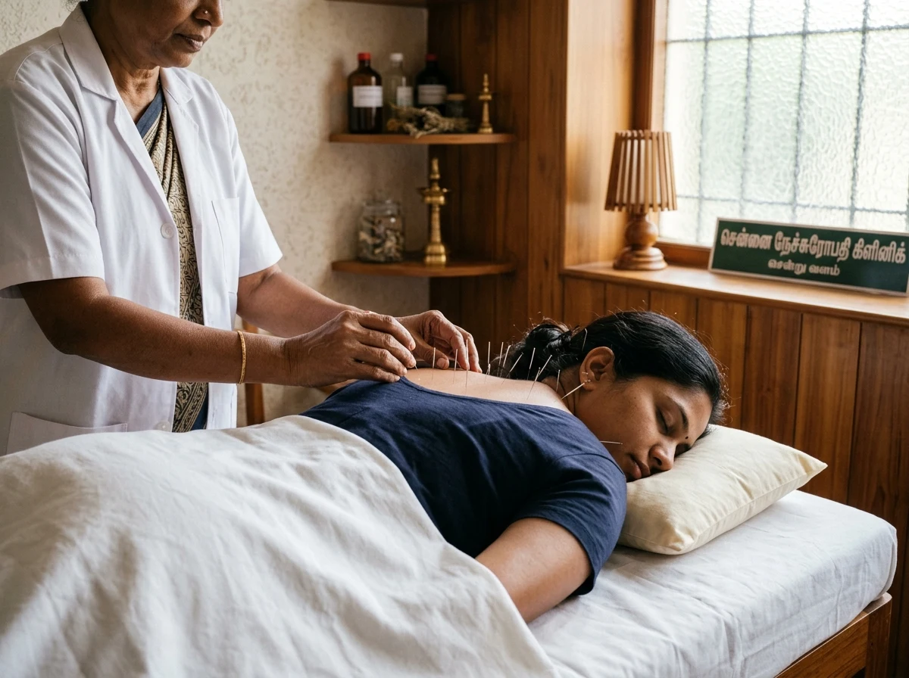
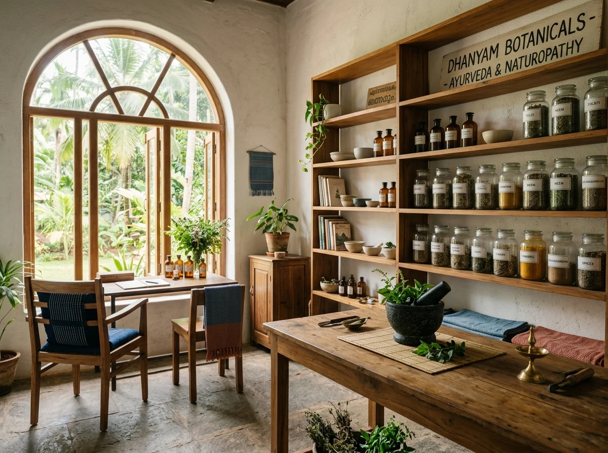
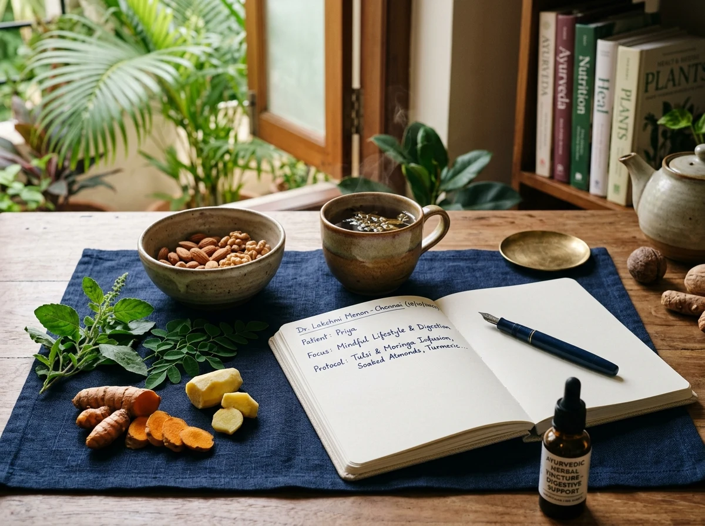
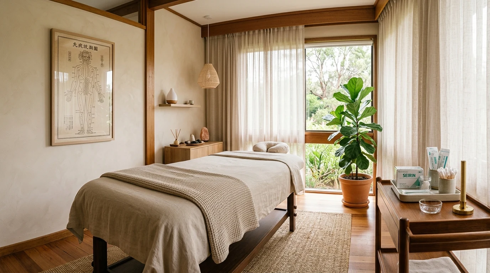
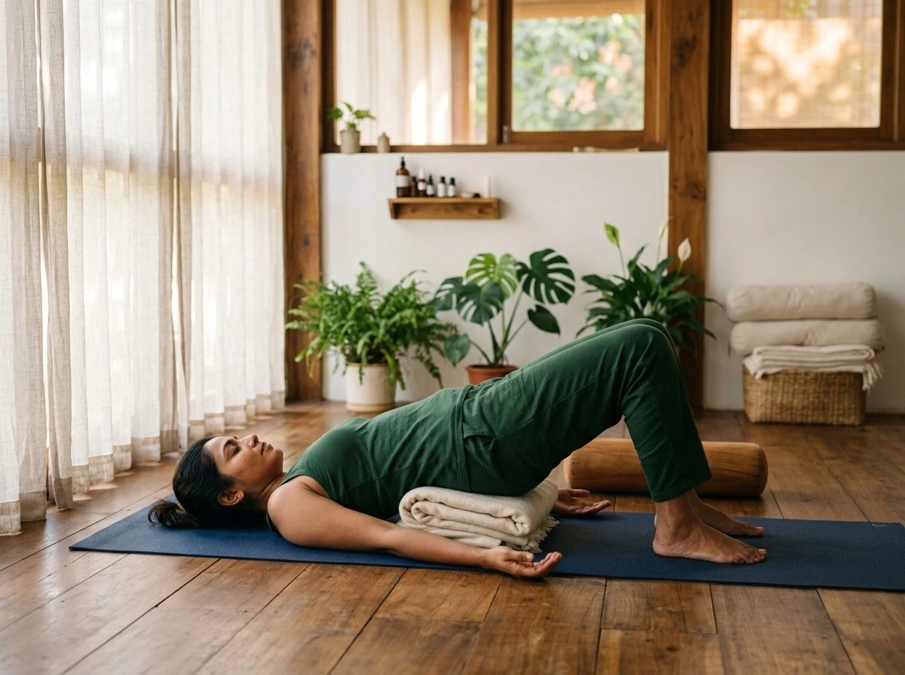

A natural approach to attentive care.
Rooted in clinical naturopathy, classical meridian acupuncture, restorative nutrition, medical ozone, and therapeutic yoga. Dedicated care tailored to individual vitality in Kolathur, Chennai.

9:30 AM – 1:00 PM
4:00 PM – 8:00 PM
Sunday — Holiday
A deliberate clinical discipline honoring the body’s innate restorative capacity.
At Athmease Nature Cure Clinic, healthcare is approached through rigorous clinical observation, non-invasive therapies, and patient education. Guided by Dr. Shirly Annes.S, every consultation starts with detailed inquiry into systemic vitality, lifestyle rhythm, and biomechanical patterns.
Instead of symptomatic suppression, the clinic harmonizes five established nature cure pillars: precision acupuncture to regulate neuro-energetic meridians, hydrotherapy and botanicals to assist physiological elimination, personalized nutritional planning, clinical ozone protocols, and therapeutic yoga practices designed for restorative rehabilitation.
Learn about Dr. Shirly Annes.S & The PracticeFive Disciplines of Care
Derived from the clinic's authoritative signboard. Hover or tap each discipline to examine its therapeutic approach.
Naturopathy
Drugless systemic therapies employing water, mud, botanical packs, and thermal stimulus to encourage natural physiological elimination and homeostatic self-regulation.
Acupuncture
Advanced filiform needle placement along anatomical meridians by a fellowship-certified practitioner to relieve pain syndromes, calm neuro-vegetative tension, and stimulate systemic circulation.
Nutrition
Individualized clinical dietary plans, botanical decoctions, and food-as-medicine guidance calibrated to metabolic constitution, digestive strength, and nutritional restoration.
Ozone
Clinical medical ozone protocols administered under physician oversight to support cellular oxygen utilization, modulate microcirculation, and reinforce immune resilience.
Yoga
Therapeutic asana alignment, conscious pranayama breathwork, and clinical relaxation routines tailored for postural rehabilitation, stress modulation, and autonomic balance.





Dr. Shirly Annes.S
Dr. Shirly Annes.S is the founding physician of Athmease Nature Cure Clinic in Kolathur, Chennai. Holding a Bachelor of Naturopathy and Yogic Sciences (BNYS) along with a post-graduate Fellowship in Advanced Acupuncture, her clinical practice bridges time-tested biological nature therapies with precise meridian acupuncture.
Her consultations are distinguished by quiet, attentive diagnostic observation and an unwavering commitment to physiological balance. Rather than hurried interventions, every patient is given unhurried time to evaluate dietary patterns, stress load, structural posture, and underlying physical concerns.
Quiet, deliberate environment in Kolathur.
A sanctuary designed for unhurried healing. Clean medical linens, gentle natural daylight, and sterile clinical instrumentation.

Consultation Hours & Address
Physical Signboard Address
No. 1275, 7th Cross Street, Poompuhar Nagar,Kolathur, Chennai – 600 099, Tamil Nadu, India
Google Maps Context & Plus Code
1275, Poompuhar Nagar 7th Cross St, North Jaganatha Nagar, Kolathur, Chennai 600099
Plus Code: 4697+CQ Chennai, Tamil Nadu
Consultation Timings
Begin with a consultation.
Connect with Athmease Nature Cure Clinic in Kolathur, Chennai. Discuss your personal health objectives directly with Dr. Shirly Annes.S.